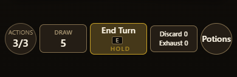
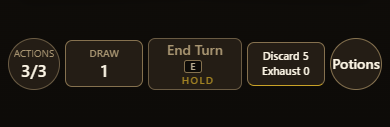
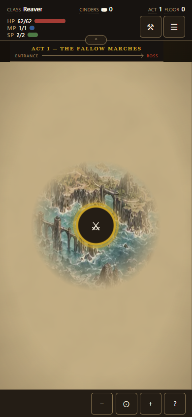
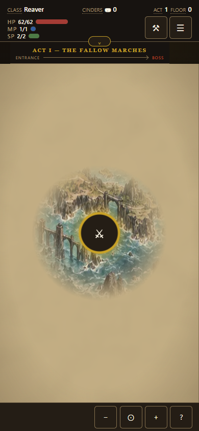

Build 0.6.0.50. Six combat viewport sizes, both turns; expanded/compact maps on phone and desktop. All 16 browser layout checks pass, with combat inventory retained and cards still 5:7.
Measurements · Map preview · Combat preview



